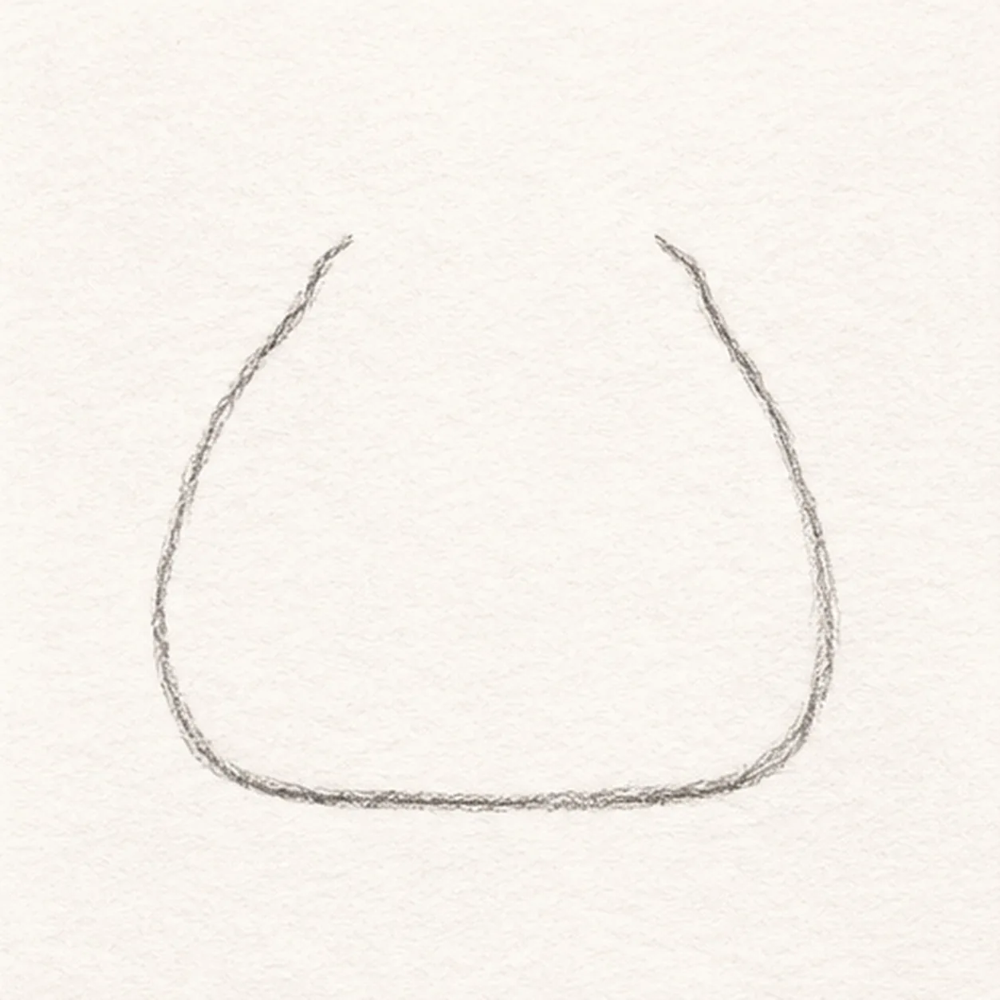
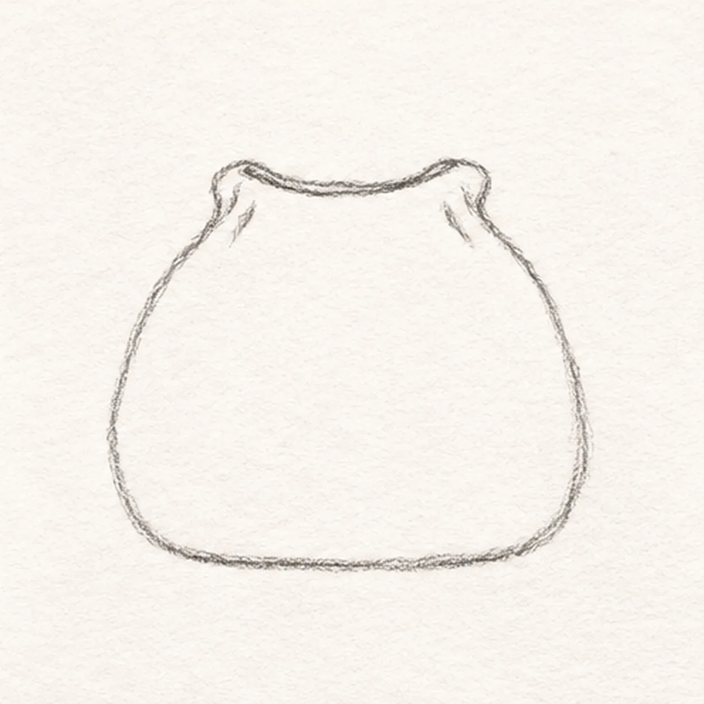
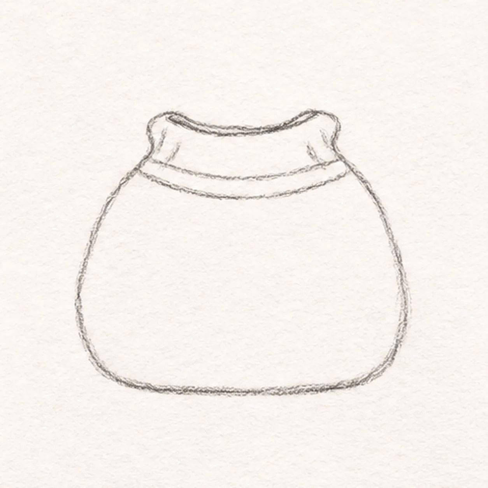
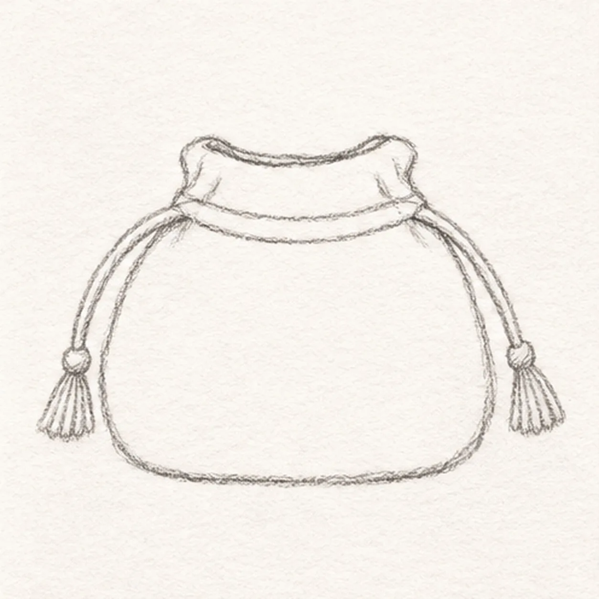
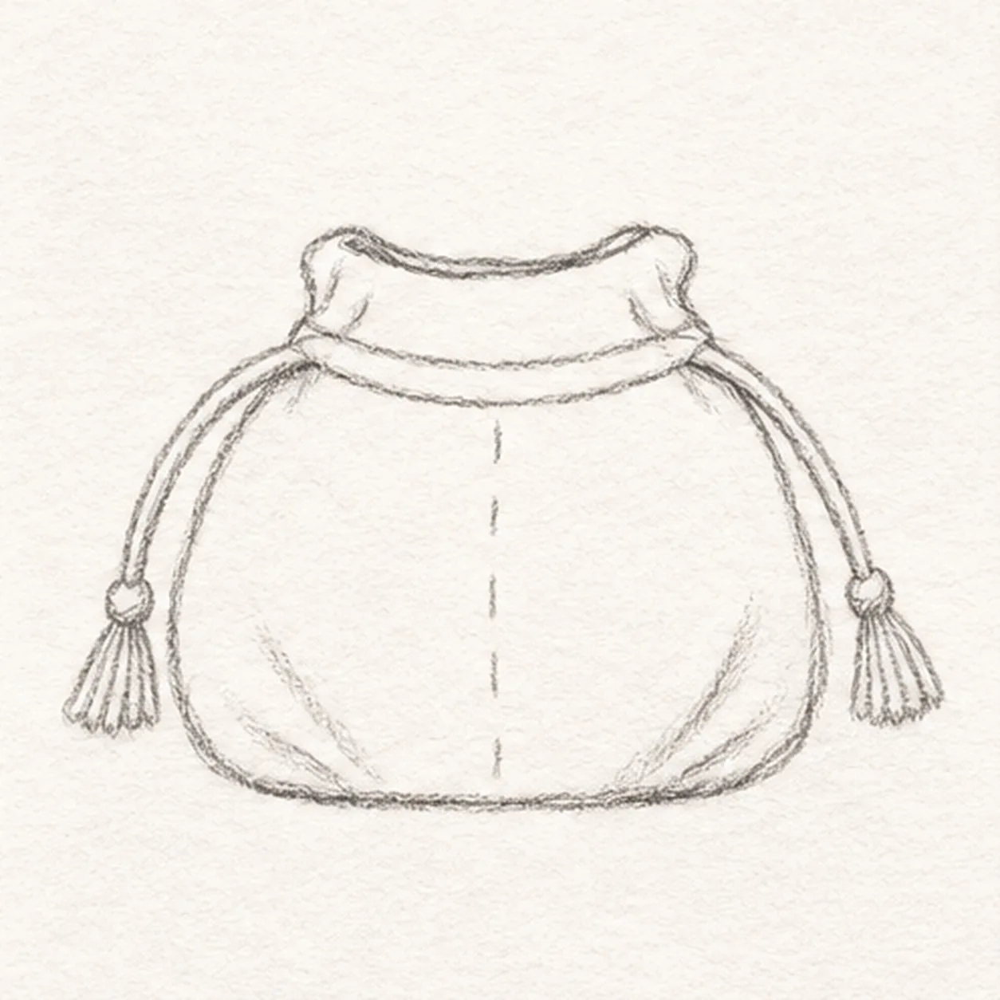

Pencil ready?
Let's draw a drawstring pouch
Treat this as one small practice round: build the subject lightly, notice the shapes, then darken only the lines that help the finished sketch.
-
01

Shape the pouch
Draw a squat soft-sided pouch with a gently flattened bottom. Leave a gap across the top center for its gathered neck.
Sketch tip: Keep the top gap broad enough for the opening.
-
02

Gather the top
From the upper left and right body ends, bend two short shoulders inward; join them with a narrow curved opening.
Sketch tip: Connect the gathered shoulders to the original side endpoints.
-
03

Add the cord channel
Just below the opening, draw two shallow parallel arcs across the pouch front, ending at the side shoulders.
Sketch tip: Keep the channel just below the opening.
-
04

Hang two tassels
From the left and right channel ends, draw one loose cord down each side. Finish each cord with a small tapered tassel.
Sketch tip: Count one cord and one tassel on each side.
-
05

Mark the fabric folds
Add a short broken seam at the front center and one light upward fold from each bottom corner. Keep all three marks inside the pouch.
Sketch tip: Keep the seam broken so it reads as stitching.
-
06
Shade the linen pouch
Deepen the established outlines and folds with 2B. Shade the pouch lightly with graphite and a touch of warm ochre, leaving paper-white highlights.
Sketch tip: Let the white paper show through the fabric color.